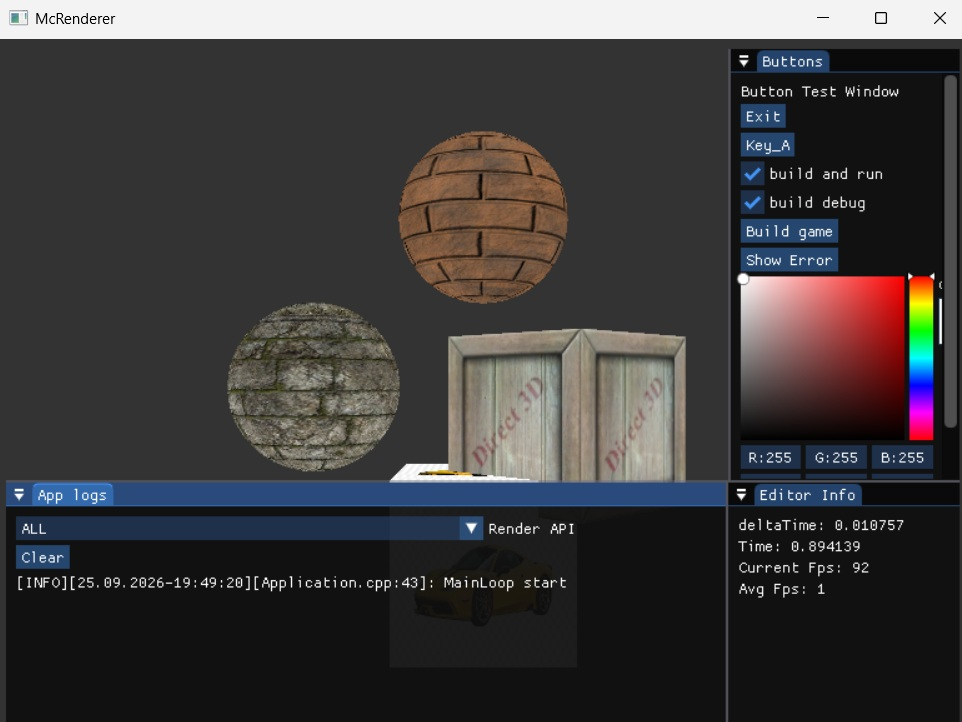
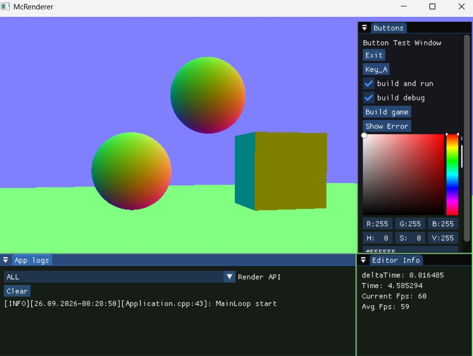
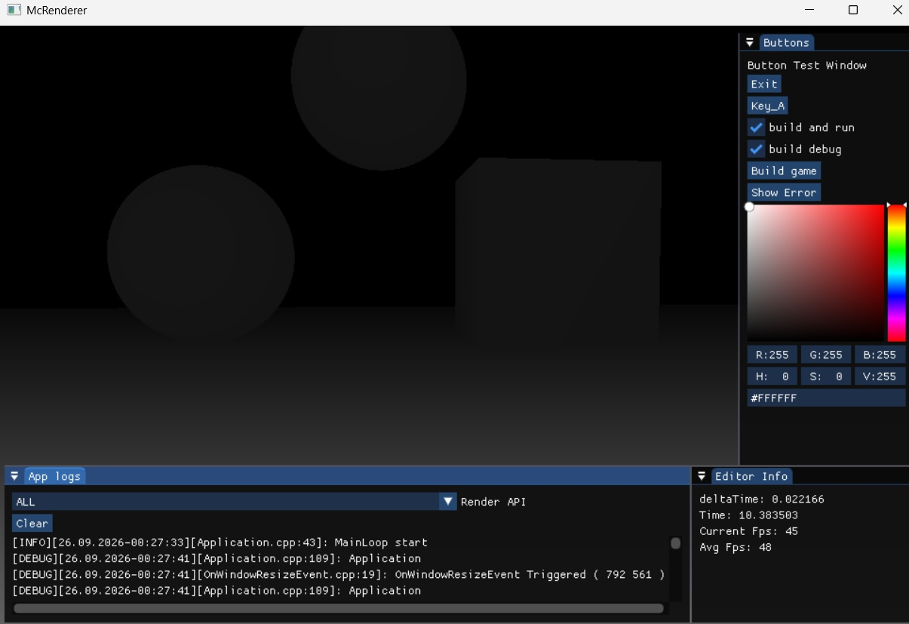
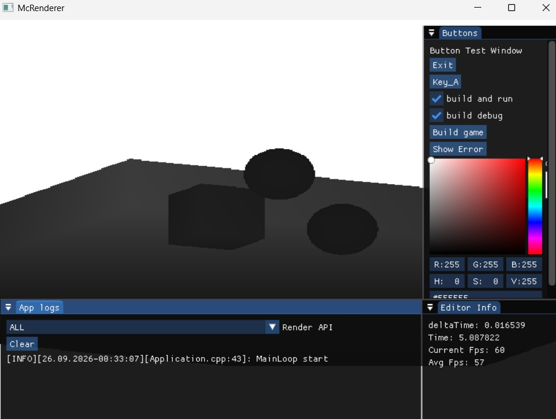
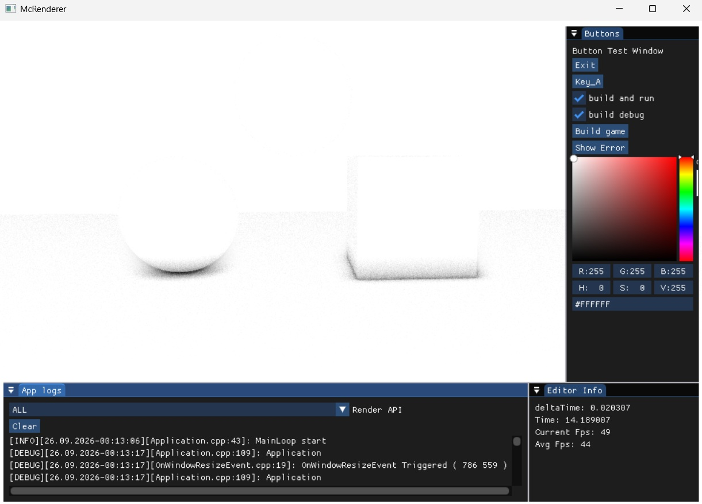
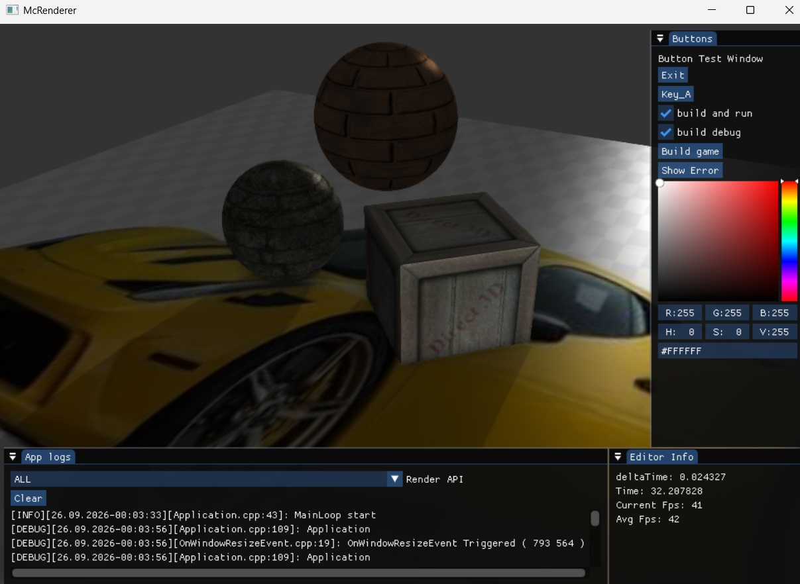

Overview
Overview
A simple 3D renderer built using the DirectX 12 API. This project is a work in progress and serves as a personal playground for exploring modern real-time rendering techniques and low-level graphics programming.
Core Features
- Implemented a basic deferred rendering pipeline
- Implemented a basic screen-space ambient occlusion (SSAO) technique
- Implemented a simple FXAA anti-aliasing technique
- Implemented a simple PBR lightning for directional light (IBL in-progress)
Work in Progress
This project is actively evolving. I plan to update this page from time to time as new rendering features, improvements, and experiments are added to the renderer.
Video
Simple renderer visuals
Simple renderer PBR visuals
Screenshots






×